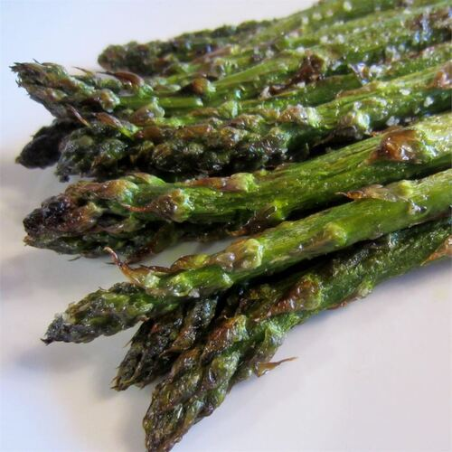

Grilled Asparagus

Description
The special thing about this recipe is that it's so simple. Fresh asparagus with a little oil, salt, and pepper is cooked quickly over high heat on the grill. Enjoy the natural flavor of your veggies.
Ingredients
- 1 pound fresh asparagus spears, trimmed
- 1 tablespoon olive oil
- salt and pepper to taste
Steps
- Preheat grill for high heat.
- Lightly coat the asparagus spears with olive oil. Season with salt and pepper to taste.
- Grill over high heat for 2 to 3 minutes, or to desired tenderness.